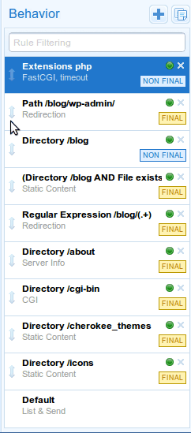
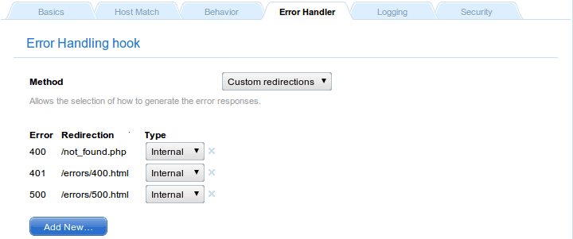
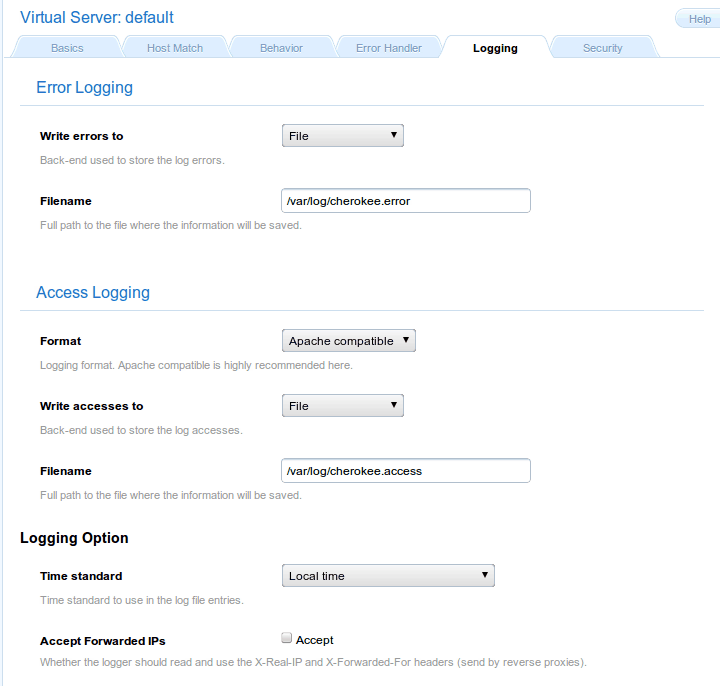
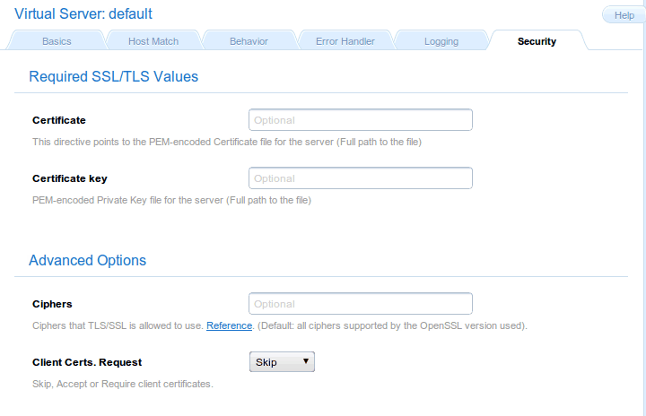

A Virtual Server is an abstraction mechanism that allows you to define a custom number of parameters and rules that have to be applied to one or more domains.
In a Cherokee server there must be at least one virtual server named default, and there is no maximum number. You can define and delete as many as you want, with the sole exception of default which must be present always.
When the server receives a request it will try to match the domain name specified in the virtual server that should handle it. In case no virtual server matches the request, default will be used.
Host Match
This section of the admin is divided in a left panel and main contents section on the right.
The panel displays the list of virtual servers, which can be filtered according to the matching criteria specified in the Virtual Server Filtering box, and has two buttons at the top that correspond, from left to right, to Add New Virtual Server and Clone Selected Virtual Server.
Whenever you select a virtual server, the main content area displays information relevant to the chosen host.
You should be aware that the order in which the virtual servers are listed is not arbitrary. The list is evaluated from top to bottom whenever Cherokee receives a request, and the first virtual server that matches the given request will be the one used to send a reply.
You can drag and drop the elements of the list to change the order in which the matches are evaluated.
The default virtual server is always at the bottom and cannot be dragged. As mentioned above, if a request doesn’t match any other virtual server, it falls through all the way to the default one to ensure no requests are left unattended. The most simple usage scenarios usually involve only the default virtual host, and do not require additional virtual servers.
The entries on the Virtual Server list are composed of two elements:
-
Name
An alias that is used to identify the virtual server and is the value used when filtering the virtual servers to be listed. The domain names handled by the virtual server should be specified later in the virtual server details page.
-
Document Root
This is the directory from which Cherokee will serve files. For example, if the Document Root is /var/www, then a client’s request for http://www.example.com/index.html refers to /var/www/index.html on the server.
In the simplest case, the server might return the contents of the file to the client. But Cherokee provides a richer mechanism of behaviors, based on the the URL. Behaviors are described below. For now, just know that the combination of a URL and the Document Root specifies the match (for instance, a file on the server), but does not specify how that file will be served. Note that not all rules will necessarily match files to be sent to the client, so the Document Root is not always used.
This is controlled by behavior rules. The set of rules is checked from the highest to the lowest possible priority. Once a rule is matched, the server appends the path from the requested URL to the document root to make the path to the document. If it is a directory, this information is used. If other rules apply to a parent directory, those are applied as well without overwriting the original behavior:
http://www.example.com/index.html refers to /var/www/index.html
This might seem complicated but it’s actually simple to understand. For example suppose you had a directory called /secret that was protected with authentication, and there was also a rule with higher priority for /secret/cgi that only specified to use the CGI handler. Under these circumstances, if a request was received for /secret/cgi/something then the CGI handler would be taken and it would inherit the authentication specified for /secret.
Add New Virtual Server allows the creation of additional virtual hosts, either manually or by using any of the available configuration wizards. These are configuration assistants that will allow you to set up a new virtual server tailored to some application’s specific needs. The wizard will ask for some basic values, such as the name of the new virtual server or anything that might be needed to make its job, like deploying a Django application, installing Wordpress or whatever task you might have chosen. The wizards can also be run on a per-server basis, in which case instead of creating a new dedicated virtual server, the required changes will be added to the existing one. To use the wizards in this manner you will have to trigger them from the Behavior panel instead of the Virtual Server Panel. This Behavior panel is specific to a given virtual host, and can be activated using the Rule Management button of the Behavior tab. You can read more about automatic configuration on the wizards section. Regardless of them being used from the Virtual Server panel or the Behavior panel, one or more rules will be created to suit a particular scenario. The main difference will lay on the wizard creating a new virtual server or just customizing an existing one, depending on the instantiation context.
Clone Selected Virtual Server is simply a matter of selecting a target name and a source virtual server currently present. Every setting will be duplicated. From then onwards changes applied to any of them, be it the original or the copied Virtual Servers, will only apply to the implicated one. This is a great way to set up complex domains, since you can use the existing ones as templates to be refined with further work.
A detailed explanation of every tab follows.
Basics
-
Virtual Server nickname
The name that will be used to identify the virtual server.
-
Document Root
Path to use as root directory for the virtual server.
-
Directory Indexes
The DirectoryIndex directive sets the list of resources to look for when the client requests an index of the directory by specifying a / at the end of the directory name. Several URLs may be given, in which case the server will return the first one that it finds. If none of the resources exist, the server will reply according to the handler behavior.
Note that the documents do not need to be relative to the directory:
index.html,index.txt,/cgi-bin/index.pl
would cause the CGI script /cgi-bin/index.pl to be executed if neither index.html nor index.txt existed in a directory.
There is a special case in which the directory index entry starts with a slash. For example, /cgi-bin/index.pl. In that case, it will use it as the object accessible under that public address of the same virtual server, so it will take care about the possible configuration of the /cgi-bin/ directory and/or the pl extension.
-
Keep-alive
This flag is enabled by default. It is used to enable or disable Keep-alive connections on a per-virtual-server basis. Keeping persisting connections has dramatic effects both in speed, but very high traffic loads can suffer because less connections are available for any given moment.
-
Advanced Virtual Hosting
Settings to host many domains.
Host Match
This section allows to define the list of domains that the virtual server implements.
It can accept either FQDN (Fully Qualified Domain Names), wild card entries, regular expressions, IPs/Subnets, or a combination of methods that will be evaluated as a logical OR. This can be useful for some rare cases where you might need to match by IP OR wildcards simultaneously, such as the HTTPS-without-SNI workaround documented in the cookbook.
- For instance
-
example.com *.example.org
Hint: Although it is rare, there are some web-broswsers out there that do not seem to convert the FQDN to lowercase before sending the requests. This mainly happens with built-in browsers or very-early implementations. Even in those cases it is possible to have case-insensitive host matching by using regular-expression matching. For example, if your domain name was Example.com and were dealing with one such browser, you would have to prepend (?i) to your regular expression. That in turn would perform a case-insensitive evaluation, effectively solving the problem.
- The following Case-insensitive RegEx matches both example.com and Example.com
-
(?i)example.com
Note that you should probably keep in mind the way this list is interpreted in order to avoid future problems. Whenever Cherokee receives a request for a specific domain, it evaluates the Domain list of every defined virtual host in the order defined by the priorities of such hosts. When it finds a match, it stops the evaluation and starts matching the specific rules from that virtual host to send the appropriate response.
If no domain name matches the request, Cherokee re-evaluates the list of virtual hosts trying to match the request against the Nicknames, also using the priorities defined by the virtual host order.
Only after failing both with the domain names and the nicknames will Cherokee issue the failure, in which case the default virtual server is used to handle the request.
|
Important
|
It is easy to overlook the way in which virtual servers are evaluated, which leads to the common problem of not knowing exactly why some virtual servers work and some don’t. The list of Frequently Asked Questions includes "Why are my nicknames not matched, while *.example.com does work?". A careful reinterpretation of what has just been explained in this section should clarify any doubts. |
|
Warning
|
Do not use the IP/Subnet host match as a security measure to prevent access to specific IP addresses. The purpose of the IP/Subnet match type was to implement the SSL certificate selection workaround that other web servers have been using for years. If it were to be attacked, it could be easily overcome by simply setting the Host header to the name of the virtual server. To restrict the traffic of one of your virtual servers based on the incoming IP, please read the appropriate cookbook entry, restricting traffic by IP. |
Behavior
This sections allows to define a set of rules to define how the server should handle the different requests. A summary of the existing rules is presented, containing several fields of information:
-
Match: what the rule matches, which shows information about the web target of the rule (be it a path, a file type, etc.) plus the rule type. You can check the complete list of rule types in the Rule Types section.
-
Handler: The handler that manages the requests that match this rule. Read on for further details.
-
Authentication: Indicates if authentication is used for this rule. This can be set up through the Rule Entry menu.
-
Root: Indicates if the rule defines an alternative document root path.
-
Secure: Which indicates that the rule only applies for HTTPS connections.
-
Encoders: Indicates if any encoding is applied to the rule.
-
Expiration: Indicates if expiration headers are configured for the rule.
-
Timeout: Indicates if there is a defined connection timeout for the rule.
-
Shaping: Whether traffic shaping is enabled.
-
Logging: Whether the rule matches are logged or not.
-
Final: If this flag is present it means that no other rules will be applied after this one, even if the request also matches other rules with lower priority. The server will issue a response with whatever behavior it has figured out by then.
-
Enabled: If the rule is currently enabled or not, which might completely alter the behavior of the virtual server.
These rules can be defined based on the directory that the request targets, the extension of the file that it is requesting, or a regular expression that may match the request among other options.
|
Important
|
It is very important to know that these rules are prioritized. The higher its priority is, the sooner they are checked. And this priority is represented by the position of the rule in the rule-list. You could think of a network routing table, it is quite similar. You can set the relative priorities among the rules from within the Behavior panel, which is accessed through the Rule Management button. This button will switch the left panel from Virtual Server mode to Rule mode, and the list of virtual servers on the left panel will be replaced by a panel with the list of rules. |
In Rule mode you wiil be able to define a set of rules to define how the server should handle the different requests, and simply dragging and dropping the rules in the desired position will do. If you click on the rule name, the rule’s configuration options will be displayed in the main content area. If you click anywhere else, you will be able to drag and drop it into the desired position).

Rule list
Each of these behavior rules must specify the handler that the server should use to reply to the requests that match the rule.
The selection of any one of the rule targets will offer new configuration options through the Rule Entry menu.
Each of the mentioned handlers can be fine-tuned through that menu. Refer to each handler’s documentation if you are interested in the available settings.
These rules can also be combined with boolean operators, so you can apply AND to require two rules, NOT to negate and so forth. These can be nested as much as necessary.
|
Note
|
It is quite easy to fully specify a virtual server’s behavior having just some notions of Cherokee’s way of working. However, there might be some corner cases where Cherokee will behave in a manner that could not seem obvious at first. Every doubt can be easily cleared by simple understanding in full detail the way a rule is applied. For instance lets suppose there is an Extension type rule configured to handle PHP files. If a request is made for http://example.com/index.php/what/ever, this rule WOULD NOT be applied at first because the request doesn’t end with the appropriate extension: it has some additional path information. However, if there is a Default rule configured that is managed by the List and Send handler, things would work. This is because the Default rule would catch any unmatched requests, and the List and Send handler would notice the PATHINFO part of the request. It would then split the request in two parts, separating the PHP file from the appended information, and would then evaluate once more the list of rules. This time the request would end in .php and thus it would match the Extension rule meant to handle PHP files. |
Error Handler
Several mechanisms exist to handle errors.
-
Default errors
-
Custom redirections
-
Closest match
Using the Custom redirections error handler we can easily redirect errors to a custom path or website.

Error Handler
In this case, the handled errors (400, 401, and 500) will be redirected to the specified resources, while non-defined errors will trigger an HTTP 500 error. In case this is not the desired behavior, you can set a Default Error to catch and redirect the non-defined ones.
The Closest match error handler should never fail to deliver something. If a requested resource is not available, the closest match will be sent. The only exception to this is when nothing at all is at Cherokee’s disposal, in which case a standard http error is sent.
Logging
The loggers are a type of Cherokee modules to write the server log information using different destinations and/or formats:
-
Destination: File, syslog, program execution and standard error output.
-
Format: Combined (Apache compatible), NCSA or custom.
If a virtual server doesn’t have a logger set up it will not log anything.

Logging
By default Cherokee ships three loggers implementing three different logging formats:
-
combined - Combined Log Format
Logging using the Apache log format. It is the de facto standard nowadays.
-
ncsa - NCSA Log Format
Logging using the NCSA log format.
-
custom - Customizable Log Format
Logging using a user-specified format.
Besides, this sections allows you to specify several other options, such as the backend used to store errors.
Security
The virtual server must be configured with the path to the certificate before using secure connections (https). There is a document which might help to generate SSL keys and that should provide tips and information on how to configure SSL, TLS and certificates.
Cherokee fully supports the usage of different certificates for each virtual server in a given host by using SNI as defined in RFC 3546.

Security
If you want HTTPS to work, you must remember this:
-
Providing the PEM-encoded files is mandatory for both Certificate and Certificate key fields. Providing the CA List and the Client Certs is optional. The trusted CA certificates file should be a single file with all the certificates concatenated. The Client Certs, also PEM-encoded, is used to check the client certificates. You can read more about enabling SSL support on the SSL/TLS section of the documentation.
-
If you have several virtual servers, the Security section must be configured for the default virtual server besides any other virtual server you want to support HTTPS. This makes sense, since by enabling the feature in any one of them you are opening the HTTPS port in your host, and receiving HTTPS requests for a virtual server that does not provide the service can not be handled correctly. This situation can be dealt with in several ways, none of which are really elegant in design: falling back to HTTP, issuing an error that is likely to restart the HTTPS handshake, etc. The approach taken by Cherokee is at least coherent, folding back to the default virtual server. Of course, to do so it needs correct Security settings to provide an HTTPS stream, as has just been mentioned.